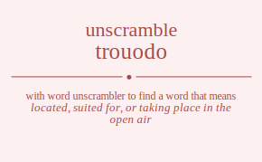

The word found after unscrambling trouodo means that located, suited for, or taking place in the open air, pertaining to or concerning the outdoors or outdoor activities, .
Wordscapes Daily Puzzle Answers for 09/03/2019
dot , duo , our , out , rod , rot , rut , too , door , odor , root , tour , dour , rout , trod , outdo , outdoor
